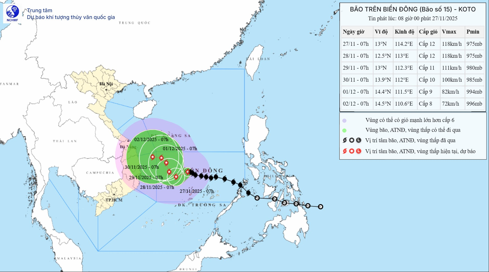

Hồi 13 giờ 00 ngày 27/11/2025, vị trí tâm bão ở vào khoảng 13,2 độ Vĩ Bắc; 113,5 độ Kinh Đông, cách đảo Song Tử Tây khoảng 230km về phía Bắc Tây Bắc. Sức gió mạnh nhất vùng gần tâm bão mạnh cấp 12 (118-133km/h), giật cấp 15. Di chuyển theo hướng Tây Tây Bắc, tốc độ khoảng 10km/h.
| Thời điểm dự báo | Hướng, tốc độ | Vị trí | Cường độ | Vùng nguy hiểm | Cấp độ rủi ro thiên tai (Khu vực chịu ảnh hưởng) |
|---|---|---|---|---|---|
| 13 giờ 00 ngày 28/11/2025 | Tây Tây Nam, khoảng 5km/h | 12,70N-112,50E; trên vùng biển phía Tây khu vực Giữa Biển Đông, cách đảo Song Tử Tây khoảng 250km về phía Tây Bắc | Cấp 11, giật cấp 14 | 11,00N-15,00N; 111,00E-115,50E | Cấp 3: khu vực Giữa Biển Đông (bao gồm vùng biển phía Bắc đặc khu Trường Sa) |
| 13 giờ 00 ngày 29/11/2025 | Bắc Tây Bắc, 3-5km/h | 13,30N-112,00E; trên vùng biển phía Tây khu vực Giữa Biển Đông | Cấp 11, giật cấp 14 | 11,00N-15,00N; 110,50E-114,50E | Cấp 3: vùng biển phía Tây khu vực Giữa Biển Đông (bao gồm vùng biển phía Tây Bắc đặc khu Trường Sa), vùng biển ngoài khơi các tỉnh từ Gia Lai đến Khánh Hòa |
| 13 giờ 00 ngày 30/11/2025 | Bắc Tây Bắc, 3-5km/h | 13,90N-111,80E; trên vùng biển phía Tây Bắc khu vực Giữa Biển Đông | Cấp 10, giật cấp 13 | 11,50N-15,50N; 110,50E-114,00E | Cấp 3: vùng biển phía Tây khu vực Giữa Biển Đông, vùng biển ngoài khơi các tỉnh từ Quảng Ngãi đến Phú Yên |
Từ 72 đến 120 giờ tiếp theo, bão di chuyển chậm theo hướng Tây Bắc với tốc độ 3-5km/h, sau đó có khả năng đổi hướng Tây với tốc độ 5-10km/h và cường độ tiếp tục suy yếu dần.
(Thông tin cập nhật lúc 14h00 ngày 27/11/2025)